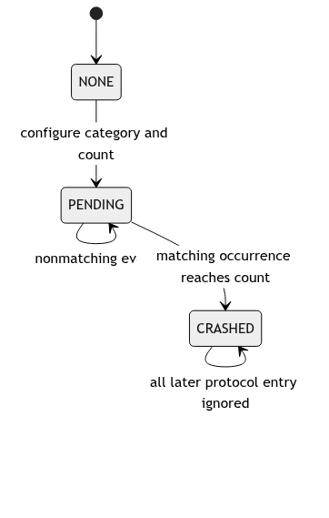
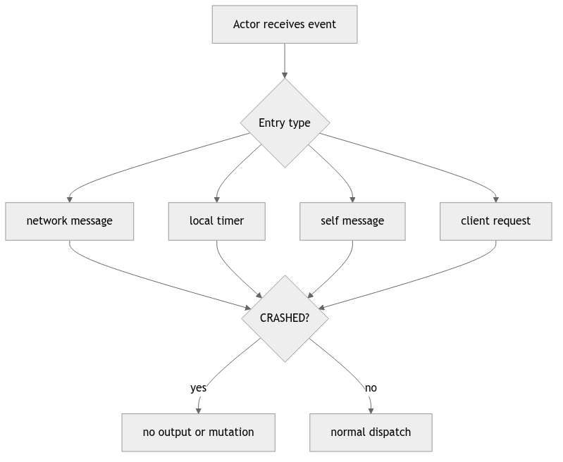
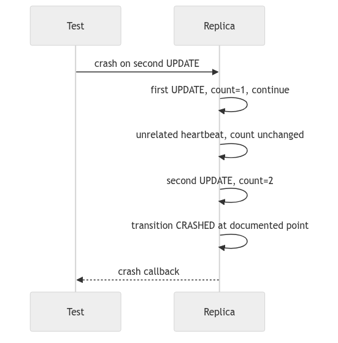
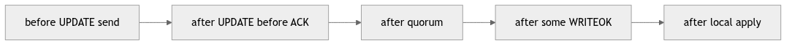
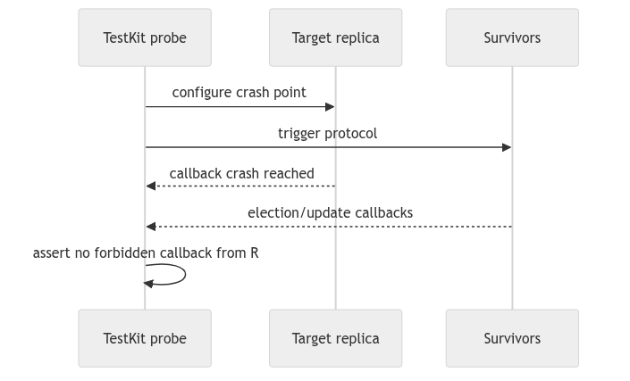
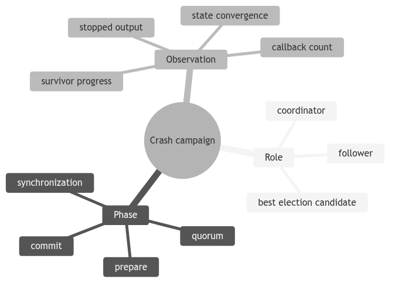

Learning goal. Understand how the repository simulates crash-stop nodes without killing Akka actors and how tests request failures at precise protocol moments.
Current implementation inspected: feature/electionTransaction at d1222a2.
Update-category reference: origin/feat/UpdateTransaction at 59bbe80.
The project does not terminate the Akka actor process. Replica instead tracks:
NONE -> PENDING -> CRASHED
NONE: normal behavior.PENDING: a test requested a crash after a selected number/type of messages.CRASHED: protocol receives and sends are ignored.This models the external effect of a crash-stop replica while keeping the actor address stable for tests.
AbstractReplica.Crash contains:
type: the protocol point to monitor;after_n_messages_of_type: the threshold.Defined categories include:
NowHeartbeatUpdateWriteOKElectionThe specification needs such instrumentation because failures must be demonstrated not only between operations, but during broadcast, after observation, during commit dissemination, and during election.
For Crash.Type.Now, Replica.crash moves directly to CRASHED and logs it. No protocol event counter is needed.
The actor remains alive and can still receive mailbox messages, including old scheduled events. Protocol handlers and send helpers must check crash state so those messages have no external effect.
For other categories, the replica stores the request, resets crashCount, and enters PENDING.
updateCrashStatusCallback(Msg) classifies selected messages. When a message matches the requested category, it increments the count. At or above the threshold, it marks the replica crashed.
This creates a deterministic test instruction such as:
Crash after processing/sending the second election-related event.
The exact location of the callback determines whether “after” means before forwarding, after forwarding one message, or after an entire broadcast loop.
The callback is invoked in two broad places:
Msg; andbroadcast or unicast sends protocol traffic.Therefore a category can count both received and sent events depending on class and control path. broadcast invokes the callback once after iterating destinations, not once per recipient. A crash threshold counts broadcast operations, not individual network enqueues.
This detail must be documented because a test expecting “crash after two recipients” would not get that behavior from the current helper.
On the election branch:
HeartbeatMsg and WatchdogExpiredMsg;WriteFinishMsg;The update feature branch additionally classifies UpdateMsg, UpdateTimeoutMsg, UpdateAckMsg, WriteOkMsg, and WriteOkTimeoutMsg as update-category events.
Because the branches are not integrated, the current branch cannot inject every update-stage crash required by the final specification. Also note that WriteFinishMsg is a local parent-completion signal, not the distributed WriteOkMsg; category naming and mapping should be reconciled in final integration.
Replica.broadcast and unicast return immediately when status is CRASHED. This ensures a queued timer cannot make a dead coordinator emit a heartbeat or continue an election.
unicast also refuses self-delivery. Protocol-local notifications that must occur on the owner use direct getSelf().tell(...) and therefore need their own crash-aware receive path.
Replica.onMessage, election entry handlers, and synchronization handlers check crash state. A complete integration must make every special receive handler equally crash-aware; otherwise a message that bypasses generic dispatch can still mutate dead-replica state.
The actor is not removed from membership. Other replicas continue sending until their timeout logic marks it unavailable or elects around it.
Crashing does not cancel every active Cancellable. Old ticks and timeouts may still enter the mailbox. Correct crashed behavior ignores them before they send or change externally visible state.
This approach is simpler than tracking and cancelling every timer, but it means crash guards are a correctness boundary. One missing guard can resurrect behavior.
The state machine has no transition out of CRASHED. That matches the specification: replicas fail by crashing and do not recover.
This is different from:
Do not claim the protocol tolerates these stronger models.
A strong exam demonstration set includes:
The current split implementation does not yet support every scenario end to end. The gap itself must be recorded.
For a deterministic crash test, assert four things:
Sleeping and hoping is weaker than observing callbacks/messages with TestKit. Time-based assertions should derive from configured latency and protocol hops.
Why keep the actor alive after a simulated crash? It gives tests a stable address and deterministic instrumentation while handlers emulate the observable behavior of a dead node.
What is the main implementation risk? A special handler or direct self-message path can forget the crash guard and let a supposedly dead replica act.
The invariant to remember is: after transition to CRASHED, no incoming or queued event may cause protocol output or application-state progress.
NONE --crash event--> PENDING --apply at configured point--> CRASHED
| |
+-------------- normal protocol ---------------+
CRASHED: ignore client requests, network messages, timers, and callbacks
until the test/model explicitly restarts or replaces the actor
The three categories describe when a fault is injected, not three different Java exceptions. A pending crash may allow an already queued event to finish; the crashed state must then block subsequent work. Read the category mapping carefully because feature branches may count “crash after update” at a different instruction than the base implementation.
Checking crashed in the ordinary network handler is not enough. Akka actors
also receive special entry messages, self-sent messages, scheduler callbacks,
and client requests. A useful review table is:
| Entry point | What a crashed replica must do |
|---|---|
NetworkChannel delivery | ignore without ACK or state mutation |
| heartbeat tick/watchdog | do not emit a new heartbeat or election twice |
| client read/write | return the specified failure/timeout, or remain silent |
| crash control message | transition once; duplicate control is idempotent |
| queued protocol message | re-check status at handling time |
void onMessage(Message m) {
if (crashStatus == CRASHED) return; // central safety guard
if (m instanceof CrashNow) {
crashStatus = CRASHED;
return;
}
routeToTransaction(m);
}
The real design may distribute these checks across handlers. During review,
trace every special path and ask whether it can call a callback or mutate
positions[] after the status changes.
A strong test names the injection point and observes a protocol consequence: “crash coordinator after receiving the third ACK; surviving replicas elect a candidate and preserve the committed epoch.” It is weaker to sleep and assert that “something eventually happened.” Use TestKit probes, callback messages, and explicit actor status where possible. Record both what the crashed actor did not do and what the survivors did do.
For each crash category, choose one message that may complete before the crash and one that must be rejected after it. Explain why the answer changes when the crash is injected before versus after a WRITEOK.

PENDING makes injection repeatable: the test names a semantic event and an
occurrence count rather than racing a wall-clock sleep. The transition to
CRASHED should be observable through a callback or status probe so the next
test action starts from known state.
Document whether the triggering event completes before the crash takes effect. “Crash on first WRITEOK” is ambiguous unless the implementation says before send, after send, before apply, or after apply.

Use the receive builder as an audit checklist. A central guard is easier to reason about, but special handlers may run before it. Trace callbacks too: a crashed actor must not report update application or election success from a queued event.
The stable ActorRef is a testing convenience. Do not confuse addressability with liveness; messages can still be sent to a simulated dead node and then ignored.

Count only the selected semantic category. If helper methods increment at slightly different positions across feature branches, the same test name can inject different windows. Reports must tie the category to concrete code and branch provenance.
Reset counters between tests and avoid static mutable instrumentation. Otherwise execution order changes the injected failure.

Each edge produces a different recovery obligation. Before dissemination, survivors may know nothing. After quorum, a majority contains evidence. After one correct replica applies, uniform agreement requires eventual preservation. After local apply but before callback, client knowledge and system state differ.
Name the chosen window in every test assertion. “Coordinator crash test” is too broad to explain what property was exercised.

Positive and negative observations belong together. Verify the crash occurred, the dead actor stopped output, and survivors made the expected progress. Use a bound derived from protocol delay rather than an arbitrary long sleep.
TestKit silence assertions should be scoped narrowly: too short misses late violations, while too long slows the suite without adding evidence.

Choose one leaf from each branch and form a scenario. Record initial state, exact injection transition, allowed final states, and forbidden output. Repeat the same scenario on the relevant feature ref because crash-category placement may differ across branches.